Best Places to Survive a Zombie Apocalypse: 14 Bases Ranked
When the outbreak starts, almost everyone will have the same thought: where is the safest place to go? A supermarket looks packed with supplies, a hospital has medical equipment, an apartment puts you above the street, and an island sounds like a natural wall between you and danger. But the place that looks safest on day one may be a terrible place to live by day thirty.
The real challenge is not just keeping zombies out. You need drinking water, food, sleep, sanitation, medical help, spare parts, and a way to leave if your base becomes unsafe. You also need to think about other survivors. A location full of supplies may attract crowds; a remote cabin may be peaceful but leave you without help when someone gets hurt.
This ranking compares 14 common places, from supermarkets and hospitals to islands, small towns and three different kinds of rural refuge. The order weighs short-term shelter, food and water, security, daily maintenance, access to useful supplies, community and escape routes. It is a general comparison, not a promise that one address will always beat another: a prepared home can be safer than a neglected farm, and a well-run small town can outperform an isolated property.
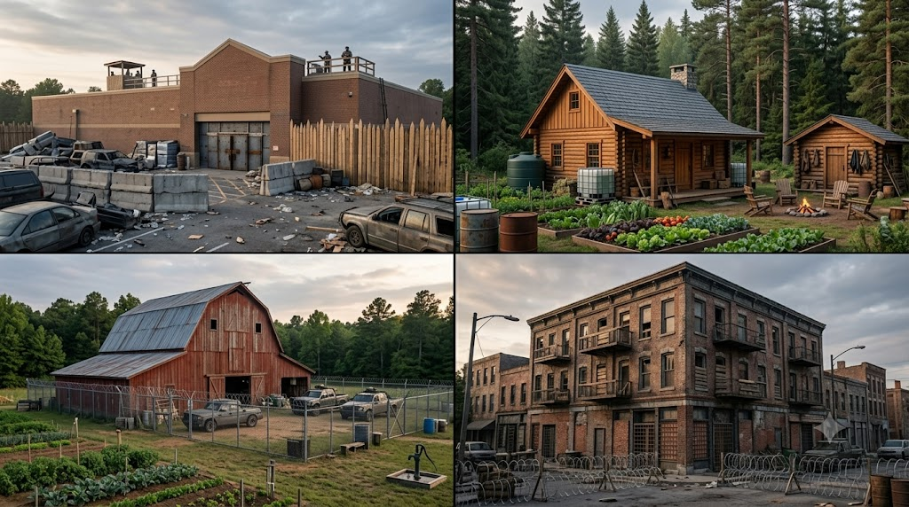
14. Supermarket
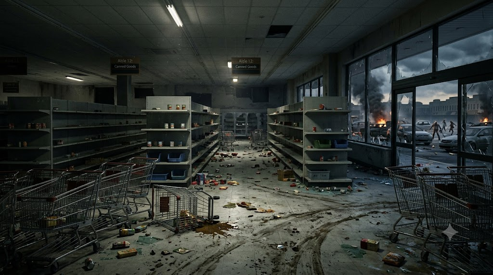
A supermarket is one of the first places people would think about when food starts running low. It may hold canned goods, rice, pasta, snacks, bottled drinks, hygiene products, batteries, basic first-aid items and useful containers. A large store can provide supplies quickly, especially early in an outbreak before everything has been picked over.
But it is a supply stop, not a home. A supermarket is designed to welcome crowds, not to support a small group living there for months. It has broad windows, multiple entrances, loading areas and a lot of space to watch. The same shelves that make it attractive to you will draw other survivors. Food may spoil without refrigeration, and the water available on site can be much less than you expect. Restrooms also become a serious problem when plumbing stops working.
A supermarket might be worth visiting for a planned, short supply run if it is safe to do so. Staying there is another matter: you would be defending a huge building full of exposed entrances, with no guarantee that the next person through the door is friendly. The best use is to collect what you need and move on rather than advertise it as a permanent base.
Advantages
- Wide variety of food, drinks, hygiene products and useful household supplies.
- Useful early in an outbreak for a short, planned supply stop.
Disadvantages
- Highly visible and likely to attract crowds and competing groups.
- Food storage, refrigeration, sanitation and perimeter control are difficult.
Bottom line: A supermarket is useful for supplies, but staying there turns a shopping trip into a security problem.
13. Hospital
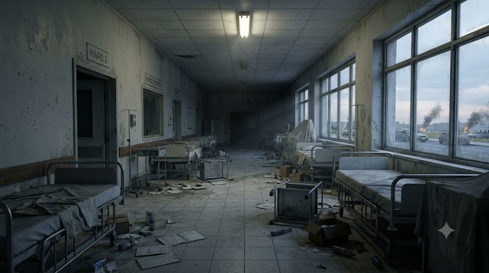
At first glance, a hospital sounds like a near-perfect refuge. It has medical equipment, trained staff when services are still operating, treatment rooms, beds, cleanable surfaces and sometimes backup power. If somebody is seriously injured, access to real medical care can matter more than almost anything else.
The trouble is that hospitals depend on an entire system around them. They need staff, electricity, clean water, oxygen supplies, medicine deliveries, waste disposal, maintenance and working equipment. If that system breaks down, a complex building can become hard to run. Hospitals will also be full of frightened people, patients who cannot easily move, and families looking for help. In a zombie outbreak, that crowding could make the area extremely risky, particularly during the first wave of chaos.
There may be useful supplies, but a hospital is not a self-contained farm or a long-term food store. It may have limited ordinary food, and much of its equipment is specialized rather than useful for everyday survival. Leaving can also be difficult if the surrounding streets are blocked. Unless you are part of an organized medical group with a realistic plan to operate there, a hospital is better thought of as a place to seek necessary care than a base to occupy.
Advantages
- Medical equipment and trained professionals may be available while services continue.
- Some areas have backup power, sanitation systems and secure storage.
Disadvantages
- High demand, crowding and complex dependence on supplies and trained staff.
- Not designed to provide long-term food production or easy evacuation for a group.
Bottom line: Medical help is precious, but the building alone cannot replace the people and systems that make a hospital work.
12. School
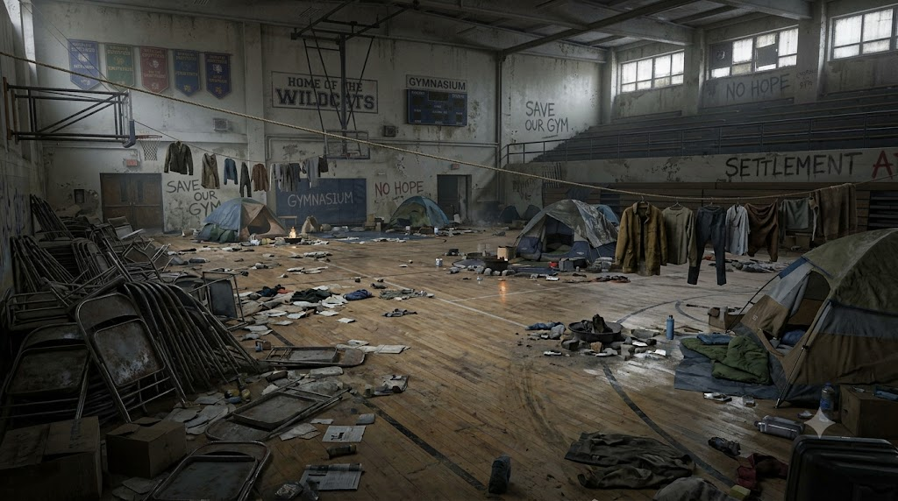
A school offers something many homes do not: space. Classrooms can separate sleeping areas from food storage, a gym can hold a larger group, and kitchens, toilets, lockers, desks and storage rooms may be useful. A school could work as a temporary refuge for families or a community group, particularly if people arrive together and agree on basic rules.
The same size creates problems. Schools can have many external doors, ground-floor windows, long corridors and large areas that are difficult to monitor all the time. A building with dozens of rooms needs people to check and maintain it, even when no one is attacking. School food supplies are not usually meant to feed a large group for weeks, and water, toilets and heating still depend on working utilities or backup arrangements.
A school also has little natural ability to produce food. A sports field might be turned into a garden, but that takes time, tools, soil preparation, seeds, water and protection from weather. It could be a decent short-term group shelter, but it would need a much bigger plan before it could become a lasting settlement.
Advantages
- Large indoor space, separate rooms and facilities that can help organize a group.
- May have kitchens, storage rooms, a gym and an outdoor field.
Disadvantages
- Many entrances and windows to monitor, with limited long-term food and water.
- Large buildings take people, time and resources to maintain.
Bottom line: A school could shelter a group temporarily, but space is not the same as self-sufficiency.
11. Ship
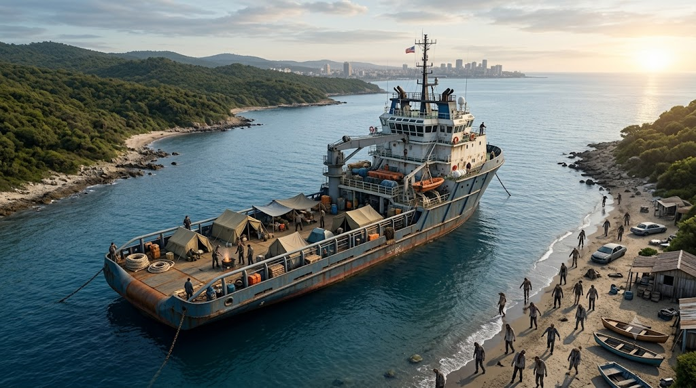
A ship has one enormous advantage: it can put distance between you and danger on land. Depending on the vessel, you may have sleeping quarters, storage space, tools, radios, fuel, fishing equipment and a way to move along the coast. In the right hands, a boat can help a group reach a remote area or move supplies between locations.
Life aboard a ship depends on skills and systems most people do not have. Engines, navigation, pumps, batteries, sanitation, weather forecasts and regular maintenance all matter. Salt water is not drinking water, and fresh water is only reliable if the vessel has sufficient stored supplies or a working treatment or desalination system. Fishing is not a guarantee of food; it requires equipment, knowledge, time and conditions that cooperate.
A ship can also become a trap. A mechanical problem far from shore is serious, bad weather can make travel dangerous, and getting off may not be easy. You cannot simply walk away if the engines fail or the crew disagree. It might be a strong option for experienced sailors with a maintained vessel and a clear destination, but a random ship is not automatically a floating safe house.
Advantages
- Can create distance from land-based threats and move people or supplies.
- May offer storage, tools, communication equipment and fishing opportunities.
Disadvantages
- Fresh water, navigation, fuel, engines and sanitation require ongoing attention.
- Weather or mechanical failure can leave you with few safe ways to escape.
Bottom line: A ship is only as safe as its crew, equipment, water supply and ability to reach a suitable destination.
10. Forest
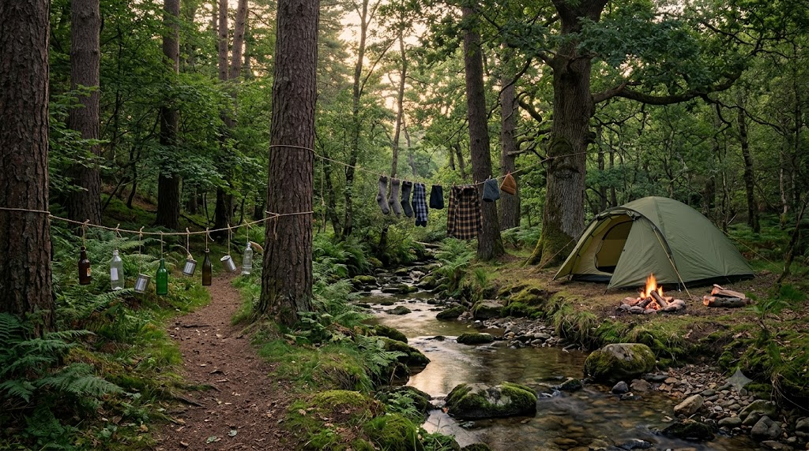
This entry means woodland without a prepared building or maintained settlement. A forest may have natural cover, firewood and materials for simple projects, and someone who knows the area may understand its trails, streams and seasonal hazards. It can provide a route away from crowded roads, but it is terrain to move through or shelter in temporarily—not a ready-made home.
The forest does not provide safe drinking water, reliable meals or a dry place to sleep automatically. Wild food is unpredictable, and hunting or fishing require skills, equipment and suitable conditions. Streams may contain harmful organisms or contaminants; rain can soak supplies; insects, animals and sudden temperature changes create additional problems. A person still needs shelter, sanitation, food storage and a way to treat injuries.
This is different from the remote-cabin entry below. A cabin gives you an existing roof and at least some fixed facilities; simply walking into the trees with a backpack gives you none of those. A forest can also make it harder for friendly people to find you, get information or help with an injury. Use it as an environment you understand, not as a magical pantry or permanent base.
Advantages
- Natural cover, firewood and materials may be available.
- Can help you avoid crowded roads and settlements while moving.
Disadvantages
- Food and safe water are not guaranteed; weather and exposure become major risks.
- No secure shelter, sanitation or reliable medical access without preparation.
Bottom line: Use the forest as terrain to understand, not as a magical pantry that will keep you alive.
9. Cold Region
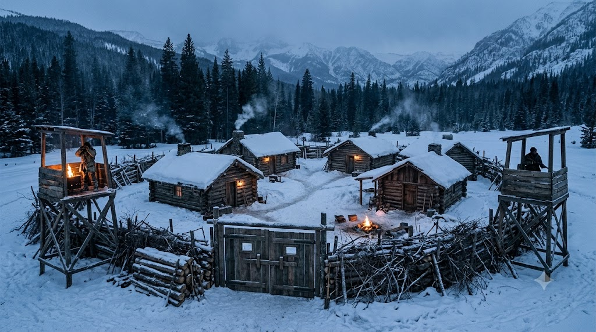
A cold region is a climate choice rather than a particular kind of building: a town, cabin, island or farm can all be in a cold region. It might seem attractive because fewer people live there, supplies may be less contested, and winter conditions could change how zombies move. But do not build your plan around the hope that freezing temperatures will solve the problem. Your own body still needs warmth, dry clothing, calories and shelter, and cold can turn an ordinary mistake into an emergency.
Food production is seasonal, travel may become difficult, water can freeze, and vehicles and batteries perform poorly in severe cold. A reliable heating source becomes essential, but heating requires fuel or electricity and safe ventilation. A power outage can make a comfortable house dangerous surprisingly quickly. A cold location also means that repairs, outdoor work, collecting firewood and caring for animals take more energy.
Cold places work best for people who already understand the climate and have suitable buildings, insulation, heating, stored fuel, winter clothing and a dependable water plan. Choosing a remote snowy place without those advantages simply trades one threat for a pile of new ones. Evaluate the climate on top of the shelter type you choose; a cold cabin and a cold farmhouse have different strengths, but both face the same exposure and heating challenges.
Advantages
- Potentially lower population density in some areas.
- A well-insulated property with reliable heat and stored supplies can be resilient.
Disadvantages
- Heating, food, water, transport and repairs become harder in severe weather.
- Power or fuel failure can quickly make the location unsafe.
Bottom line: A prepared home in a cold region may work; an unprepared person in the snow is in serious trouble.
8. Apartment
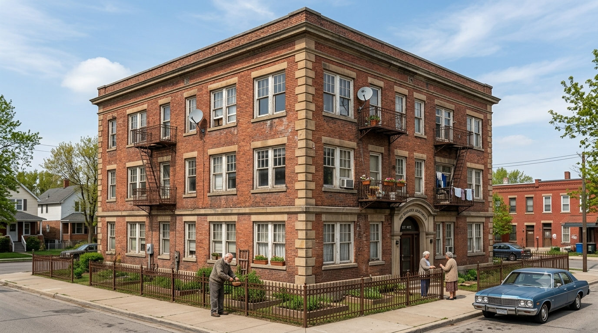
An apartment has several advantages that get overlooked. You already have a roof, a kitchen, beds, clothes, furniture, and neighbors who might cooperate. An upper-floor unit may have fewer approaches than a ground-floor home, and living in a familiar space means you do not need to build shelter from scratch. If you have stored food and water, staying put for a short period could be sensible.
The weaknesses are tied to the building itself. Most apartments depend on shared water pressure, electricity, elevators, waste systems and building management. When these fail, carrying supplies up the stairs and dealing with toilets, rubbish and heat becomes harder. A single staircase can become a bottleneck, and a fire or blocked corridor may cut off your usual exit. You also have limited space for food production and little control over the people entering the building.
A quiet apartment with a reliable emergency exit and cooperative neighbors may be safer than a poorly maintained rural property. But an apartment is rarely a strong long-term base on its own. If you choose one, think about water storage, stair access, fire safety, a way to communicate and a route out that does not depend on elevators.
Advantages
- Existing shelter, kitchen, furniture and possible cooperation with neighbors.
- Upper floors may reduce some approaches and provide visibility over nearby streets.
Disadvantages
- Dependence on shared utilities, stairwells, elevators and building management.
- Little space for growing food and limited options if entrances or exits are blocked.
Bottom line: An apartment can buy time, but the building’s shared systems and escape routes matter as much as the front door.
7. RV or Camper
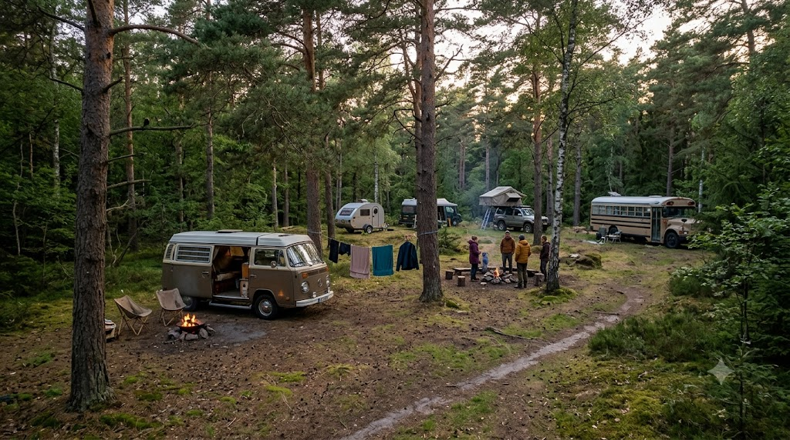
An RV or camper is different from an ordinary car because it is designed to function as a small living space. You may be able to sleep inside, organize supplies, prepare simple meals and move when an area becomes unsafe. It sits between a fixed home and a vehicle used only for transport, and it can help a small group travel between planned stops if they already know how to maintain it.
The trade-off is that the home moves with the machine. Water tanks are finite, waste tanks need emptying, batteries need charging and fuel is still a dependency. Tires, engines, plumbing, propane systems and seals all require maintenance. Larger RVs can be difficult to maneuver on narrow or damaged roads, while smaller campers have little room for people, supplies or privacy. If roads clog or the vehicle breaks down, the living space loses its main advantage.
A camper can be a useful temporary base while travelling between safer locations, but it is not automatically safer than a house. It needs a suitable place to park, a water source, a way to manage waste and a fallback plan when it cannot move. Unlike the ordinary home entry, it has mobility but limited space and finite tanks; unlike a car, it offers somewhere to sleep. It works best as part of a plan, not as a plan by itself.
Advantages
- Combines shelter, storage and mobility in one package.
- Can move away from a threat and support travel between supply points.
Disadvantages
- Fuel, water, battery power, waste disposal and vehicle repairs are ongoing needs.
- Limited space and little protection if parked in a bad location.
Bottom line: A camper is a strong travel option when the route, fuel, water and maintenance are all accounted for.
6. Island
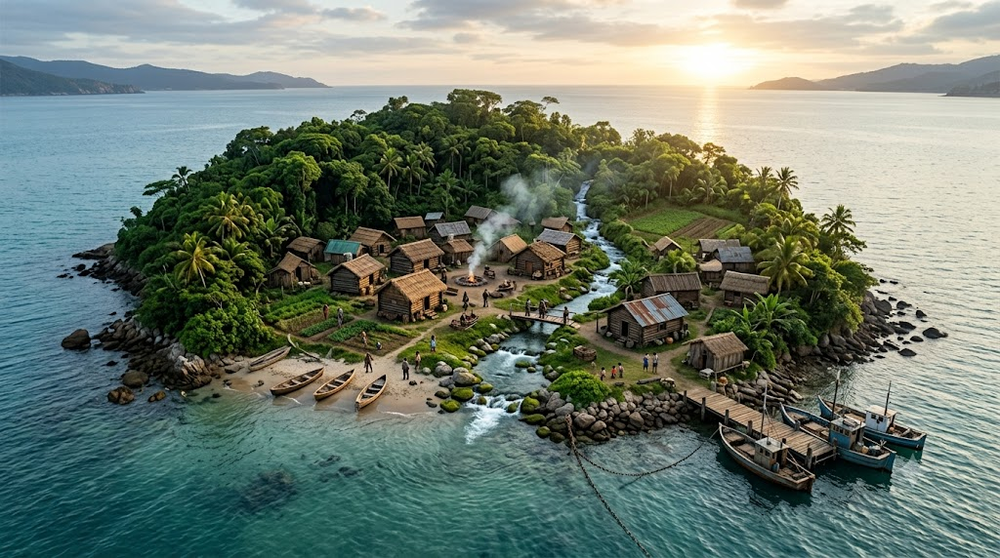
An island can offer something few places can: a natural barrier. If there is no bridge and the shoreline is difficult to reach, it may reduce the chance of random crowds arriving on foot. A settled island may also have fishing, small farms, rainwater collection, boats and a community that already knows the local environment.
But an island is not safe simply because it is surrounded by water. You still need drinking water, food, medicine, shelter and a way to handle waste. A small island may not have enough soil or fresh water for many people. Storms can damage boats, docks and buildings, while fuel and spare parts may be difficult to replace. A medical emergency becomes much worse if transport to a larger settlement is impossible.
The biggest hidden problem is escape. The sea that keeps other people away can also keep you there. You need to know whether you can safely travel by boat, whether there are alternate landing points and what happens if the boat breaks or the weather changes. A populated island with reliable freshwater and food production is promising; an empty island with no dependable water is just a beautiful place to become thirsty.
Advantages
- Natural separation from land-based crowds and possible access to fishing.
- May have established local community, farms and boats.
Disadvantages
- Fresh water, soil, medical care and spare parts may be limited.
- Leaving depends on a safe boat route and cooperative weather.
Bottom line: An island works when it has fresh water, food, transport and people who know how to keep it running.
5. Your Own Home
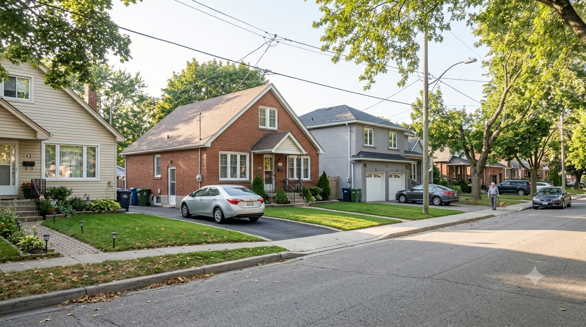
For many people, the best first shelter is the place they already know: their ordinary home. In this entry, think of a familiar standalone house or family home—not an apartment building, a working farm or a rural homestead. You know the doors and windows, where the tools are stored, which rooms get hot, where important papers are kept and which neighbors you trust. You may already have food, blankets, clothes, medicines, a first-aid kit and equipment that would be expensive or difficult to find later.
Familiarity is a real advantage. You are not learning a new building while tired and frightened, and you may be able to keep household routines going without moving everyone. A home can offer privacy and a place to rest. The problem is that most modern homes rely on outside systems for water, electricity, sewage, heating, deliveries and emergency services. The pantry may last days or weeks, but it is not a renewable food source. A small garden can help, though it takes time and water before it produces much.
A home’s security depends on the actual building and neighborhood. A sturdy house with a good view of the street, more than one exit, useful storage and friendly neighbors is very different from a poorly maintained property on a crowded road. It is worth preparing your home early, but you should also know when to leave. Familiarity should not turn into stubbornness if fire, structural damage, crowding or blocked routes make staying dangerous.
Advantages
- You already know the layout and may have food, tools, clothing and supplies.
- Comfortable for rest and can be improved before an emergency.
Disadvantages
- Utilities and deliveries may fail; stored food and water are finite.
- Staying too long can become dangerous if routes close or the area deteriorates.
Bottom line: Home is often the smartest first stop, but a good emergency plan includes a reason to stay and a reason to leave.
4. Remote Cabin — An Isolated Refuge, Not a Self-Sufficient Settlement
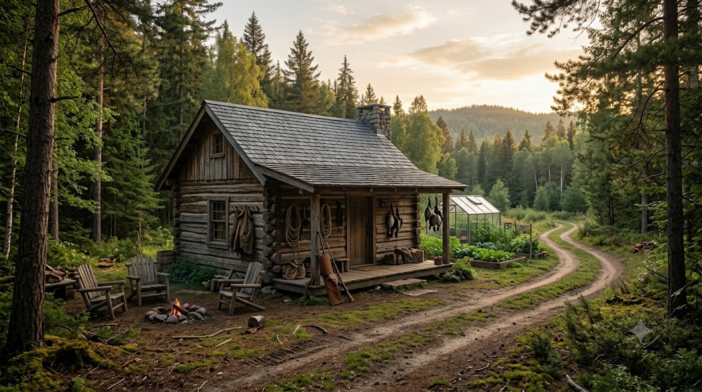
This entry means a small, isolated cabin used as a seasonal shelter or fallback refuge—not a prepared homestead or a working farm. It may provide a roof, a stove, a sleeping area and a little storage, but assume the infrastructure is basic. There may be no workshop, productive acreage, livestock facilities, dependable communications or neighbours nearby. Its main appeal is privacy and distance from dense settlements, not the ability to produce everything a group needs.
The supplies and systems are limited. Food and fuel must be stored or brought in; a nearby stream is not automatically safe drinking water; heating depends on a sound stove, chimney and a continuing supply of suitable fuel. If the roof leaks, the road washes out, the water source fails or somebody is injured, repairs and medical help may be far away. With few nearby people, there may be no one to share work, equipment or information.
A remote cabin is best treated as a temporary refuge for people who already know the property, can reach it in the conditions they expect, have a realistic water and heating plan, and know when to leave. If the property has substantial gardens, outbuildings, a workshop, regular neighbours and a town close by, it is moving into the rural-homestead category. The word “remote” does not mean “self-sufficient”.
Advantages
- An existing roof and sleeping space without needing to build a shelter from scratch.
- Privacy and fewer nearby crowds; some basic storage and shelter from weather.
Disadvantages
- Food, fuel, repairs and medical help may be far away or difficult to replace.
- Often has little productive land, limited infrastructure and few people to share work.
Bottom line: A remote cabin can buy privacy and time, but it is a fallback shelter—not a ready-made long-term community.
3. Small Town
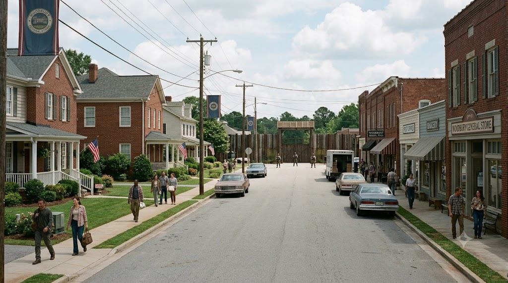
This entry is the small town itself: its people, services, local knowledge and social network, rather than one particular house or farm. It may have a grocery store, pharmacy, clinic, repair shops, fuel storage, farms nearby and residents who already know how to work together. Compared with a large city, the population may be lower and travel distances shorter. You may have a better chance of finding tools, practical skills and people who can repair a pump or vehicle.
The town is not one secure building. Supplies can disappear quickly, fuel may be rationed, and clinics or shops may close. If everyone heads toward the same obvious places, the main street could become crowded and unpredictable. Some residents will cooperate; others may be frightened, desperate or unwilling to share. A town’s advantage depends heavily on trust and coordination, not only its size.
The strongest approach is to value the town as a network of services and people, not to assume that the busiest public building is a safe home. A rural homestead nearby is a different option: it gives a group private space and some small-scale food production while keeping town services within reach. The town itself contributes repair skills, medical help, trade and information; those benefits only last if people cooperate and essential services keep functioning.
Advantages
- Access to shops, basic medical care, tools, local skills and potential cooperation.
- Can offer lower density than a large city while retaining useful services.
Disadvantages
- Supplies and services can be exhausted or overwhelmed.
- Crowds, disputes and blocked central roads can turn into major risks.
Bottom line: A small town gives you options; a cooperative community gives those options a chance to last.
2. Farmhouse — A Working Farm With High Potential and Heavy Labour
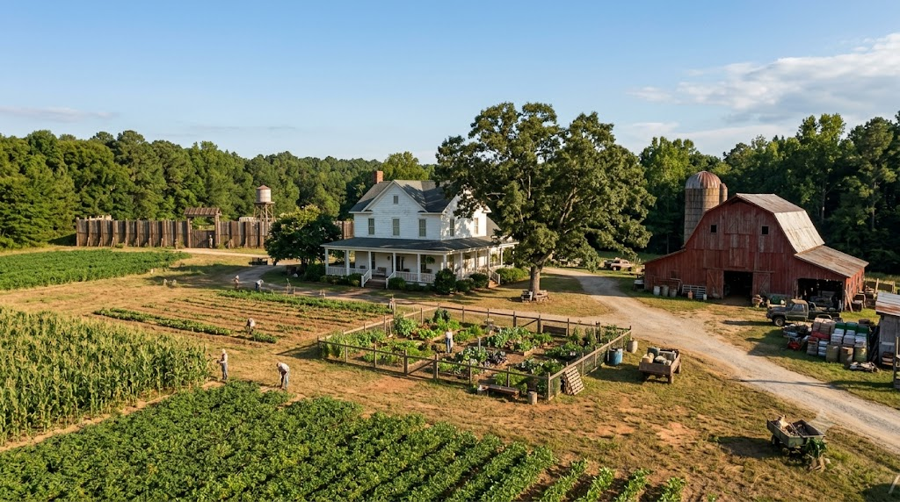
This entry means an established working farm, not simply a house with a large garden. A farmhouse may come with cultivated fields, barns, machinery, crop storage, irrigation or wells, workshops and livestock facilities. It can produce more food at scale than a small garden and may offer space for storing harvests, feed, tools and equipment. For a group that already includes experienced growers, livestock keepers and repair skills, that productive capacity is a major advantage.
The scale is also the main burden. Crops require suitable soil, seeds, water, planning, seasonal timing and sustained labour. Livestock need feed, fencing, veterinary attention and daily care. Machinery requires fuel, parts and maintenance; irrigation and pumps need backup plans. A property that once relied on a family, neighbours or hired workers can overwhelm a small group. A failed harvest, animal disease or broken water system can affect a large part of the food supply at once.
A farmhouse may sit well outside town, leaving healthcare, trade and replacement parts difficult to reach. Fields and outbuildings take time to maintain, and a large property is not automatically easier to manage or safer. It is strongest when the people there already know how to operate a real farm and can share the work. A smaller rural homestead near town may offer less production, but it asks for less land and labour while keeping services closer.
Advantages
- Potential for substantial crop production, harvest storage and livestock when properly managed.
- Barns, equipment and work areas can support repairs and agricultural work.
Disadvantages
- Requires agricultural knowledge, reliable water and sustained daily labour.
- Machinery, animals, large areas and distance from services create major maintenance demands.
Bottom line: A working farm can feed a group, but only if the group has the skills and labour to keep the farm running.
1. Rural Homestead Near a Small Town — The Best Overall Balance
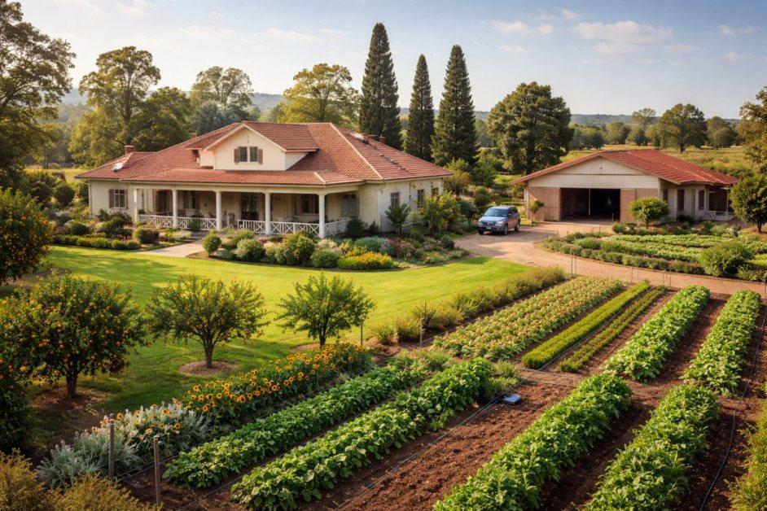
This entry means a modest, mixed-use rural property on the edge of or a short distance from a small town—not a large commercial farm and not a cabin deep in the wilderness. Ideally, it has a sound house, a manageable garden or small plot, fruit trees, food storage, basic tools, a modest workshop and a dependable water source with a backup. A few people can share the work without having to operate acres of crops or a large livestock business.
Its advantage is the combination. Unlike a remote cabin, it is not cut off from neighbours and services. Unlike a working farmhouse, it does not depend on running a large agricultural operation to justify its place. Unlike living in the town centre, it provides private space, storage and some room to grow food. A nearby town can offer a clinic, repair skills, trade, local information and people who may cooperate. The property supplies a degree of independence; the community supplies support that one household cannot easily create alone.
It still needs planning. Choose a property with access that remains usable in bad weather, safe places to store water and food, and more than one practical way to leave. Keep fire safety, sanitation and waste disposal in mind. Do not rely entirely on an electric pump, generator, one vehicle or a single road. A garden needs time, water and knowledge, and neighbours are only an asset when trust and responsibilities are built before a crisis.
The biggest advantage is balance rather than maximum output. You can store supplies, produce some food, handle basic repairs, trade with people nearby and leave if conditions change. It will not make a group independent of every outside resource, but it gives several workable options without the workload of a full farm or the isolation of a remote cabin.
Advantages
- Manageable food production and storage without needing to run a large farm.
- Private space for a small group while keeping local services, skills and neighbours within reach.
Disadvantages
- Requires regular work, a reliable water plan and cooperation with nearby people.
- Still vulnerable to fire, disease, severe weather, water failure and shortages.
Bottom line: It is the best overall balance because it combines modest self-reliance with access to a wider community—not because it is completely self-sufficient.
Before Calling Any Place Your Base, Check These Things
- Water: What is the main source? What is the backup? Can you store it safely and treat it when needed?
- Food: How long will the stored supplies last, and what can replace them afterward?
- Sanitation: What happens if toilets, drains, rubbish collection or septic systems stop working?
- Power and heat: Can you keep warm, charge devices, see at night and cook without relying on one fragile system?
- Maintenance: Do you have basic tools and the knowledge to repair leaks, doors, fences, tires or a water system?
- Security: Can you monitor the area without exhausting everyone, and can you avoid attracting needless attention?
- Escape: Are there two practical ways out? What happens if a road is blocked, a vehicle fails or bad weather arrives?
- People: Who will handle food, water, repairs, first aid, cooking, cleaning and watch duties? A base needs a team, not just walls.
One final point: do not confuse isolation with safety. Other people can be a risk, but they can also be the people who know how to fix a pump, grow food, care for an injured person or warn you about a road closure. A small, reliable community can be more valuable than a perfect building occupied by people who cannot work together.
Final Verdict: The Best Base Is the One You Can Sustain
A supermarket may provide a short supply stop, while your own home can be the simplest first shelter. An RV or camper offers a mobile living space; an island or remote cabin offers isolation, each with serious limits. A forest without a prepared shelter is only terrain, and a cold region adds climate problems to whichever base you choose. For a longer stay, the strongest choices are places that combine shelter, water, food, maintenance, people and more than one way to leave.
That is why a rural homestead near a small town takes the top spot. It offers manageable food production and private space without requiring the scale of a full working farm or the isolation of a remote cabin. A farmhouse can produce more, but only with an experienced team and sustained labour; a small town can offer services and cooperation, but the settlement itself is not a private base. Whichever place you choose, prepare for everyday problems as seriously as you prepare for zombies. A leaking roof, unsafe water or a broken vehicle can ruin a survival plan just as quickly as a bad encounter.
| Location | Food potential | Water options | Security | Escape | Long-term outlook |
|---|---|---|---|---|---|
| 14. Supermarket | High at first | Limited | Low | Variable | Poor |
| 13. Hospital | Low | Utility-dependent | Variable | Variable | Poor without staff |
| 12. School | Low | Utility-dependent | Variable | Variable | Limited |
| 11. Ship | Variable | Needs a plan | Variable | Dependent on vessel | Skill-dependent |
| 10. Forest | Uncertain | Possible, needs treatment | Low without shelter | Variable | Poor without a base |
| 9. Cold region | Seasonal | Can freeze or need treatment | Variable | Weather-dependent | Preparation-heavy |
| 8. Apartment | Stored only | Often utility-dependent | Variable | Can be difficult | Limited |
| 7. RV/camper | Stored only | Finite tanks | Low to variable | High until roads fail | Temporary |
| 6. Island | Variable | Depends on fresh water | Potentially good | Can be difficult | Highly location-dependent |
| 5. Ordinary home | Garden plus stored food | Stored/nearby options | Variable | Usually manageable | Good with preparation |
| 4. Remote cabin | Mostly stored or carried | Basic source, if present | Low to variable | Often road-dependent | Short-term unless unusually well supplied |
| 3. Small town | Supply and trade | Utility/nearby sources | Community-dependent | Several possible routes | Good with cooperation |
| 2. Farmhouse | High potential at scale; labour-intensive | Well/irrigation/rain; needs backup | Work-intensive | Rural routes may be limited | Strong with an experienced team |
| 1. Rural homestead near town | Manageable gardens/orchard plus stored food | Practical source with backup preferred | Balanced with local support | Several routes within reach | Best overall balance |
These are broad comparisons, not guarantees. Weather, local geography, building condition, nearby people, available skills and the reliability of water can change the ranking dramatically.
Sources and Further Reading
These real-world emergency-preparedness resources cover the everyday basics that any survival plan needs: safe water, emergency supplies and planning how to leave safely.
- CDC — How to Create and Store an Emergency Water Supply
- CDC — How to Make Water Safe in an Emergency
- Ready.gov — Build an Emergency Supply Kit
- Ready.gov — Make an Emergency Plan
This article is a practical comparison for a zombie-apocalypse scenario, not a guarantee that any location is safe. Real emergencies vary widely; use local emergency guidance, avoid entering dangerous or restricted sites, and prioritize evacuation when authorities advise it.
Suggested Quizzes
Ready for another challenge? Try one of these apocalypse and survival quizzes.